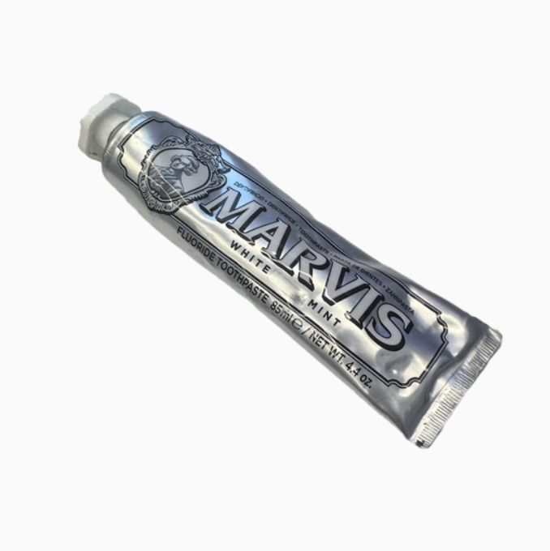

Toothpaste

Marvis Whitening Mint Toothpaste 4.4oz
Size
7*1.5*1.5 inches
Timeline
Owned less than a year
Released in 1997
Description
Carried in a toiletry bag. There is not much to be told about this particular paste, but is definitely a part of a routine, so that I carry with me. For which I spend a lot of time in the college buildings, so will eat, and will proceed to brush my teeth. Nonetheless the mandatary, the sensation of after brusing teeth is pleasant, though ephemeral.
Memories
I am not so enthusiastic about it and toothpastes in general, and purchased it to experience Marvis' renowned strong mint. But I do not think it is that strong; not as fresh as I expected. Yet I see and hear there is quite merit and brand value associated with it.
Dreams
To do its duty and be replaced.
Wonders
I see that gum is the common option of perhaps similar functions, but I chew gum once in a blue moon. More so, not a fan of gum. I wonder how I became this way.